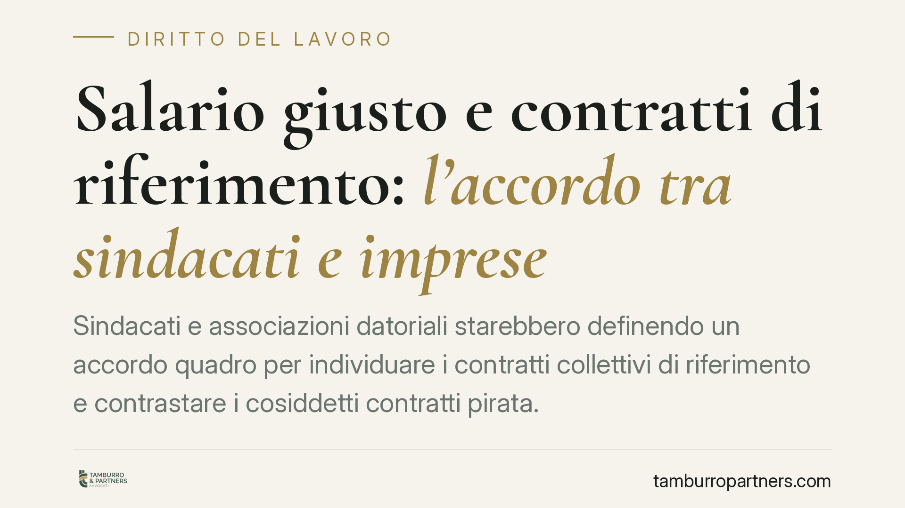

Salario giusto e contratti di riferimento: l'accordo tra sindacati e imprese
Sindacati e associazioni datoriali starebbero definendo un accordo quadro per individuare i contratti collettivi di riferimento e contrastare i cosiddetti contratti pirata. Al centro i criteri di rappresentatività e due parametri di calcolo, Tem e Tec. Per i datori di lavoro, soprattutto nei settori frammentati, è il momento di verificare quale contratto si applica e con quali effetti.

Il contesto
Secondo le notizie di stampa, le principali confederazioni sindacali (Cgil, Cisl, Uil) e un ampio fronte di associazioni datoriali — tra cui Confindustria, Confcommercio, Confesercenti, Confapi, Confartigianato, Cna, Legacoop e Confcooperative — sarebbero vicine alla sottoscrizione di un accordo quadro sui criteri per individuare i contratti collettivi di riferimento.
L'intesa, la cui firma sarebbe attesa nel corso di novembre 2026, punterebbe a tradurre in regole operative il principio della retribuzione adeguata, contrastando i contratti collettivi sottoscritti da sigle scarsamente rappresentative (i cosiddetti "contratti pirata"), spesso usati per comprimere il costo del lavoro.
Una precisazione doverosa: alla data di questo contributo, i riferimenti normativi circolati nella cronaca — in particolare il richiamo a un "decreto Primo Maggio" e alla relativa legge di conversione — non risultano verificabili su fonte ufficiale. Trattiamo quindi l'impianto come proposta annunciata e in evoluzione, non come diritto vigente e consolidato.
Inquadramento normativo
Il tema si colloca nel solco dell'art. 36 della Costituzione, che riconosce al lavoratore il diritto a una retribuzione proporzionata alla quantità e qualità del lavoro e comunque sufficiente ad assicurare un'esistenza libera e dignitosa.
La giurisprudenza ha da tempo valorizzato i contratti collettivi stipulati dalle organizzazioni "comparativamente più rappresentative" come parametro di riferimento per quantificare la retribuzione minima dovuta. Negli ultimi anni la Corte di Cassazione ha inoltre affermato che il giudice può discostarsi dai minimi di un contratto collettivo quando questi non garantiscano una retribuzione conforme all'art. 36 Cost. (si vedano le pronunce della Sezione Lavoro del 2023 sul salario minimo).
L'accordo quadro, se confermato, interverrebbe su questo quadro fornendo criteri condivisi per stabilire *quale* contratto collettivo consideri effettivamente rappresentativo di un determinato settore.
Tem e Tec: due parametri da non confondere
Il cuore tecnico dell'intesa sarebbe la distinzione tra due parametri.
- Tem (Trattamento Economico Minimo): è la retribuzione tabellare "di base" prevista dal contratto collettivo. Comprende le voci fisse e continuative — minimo tabellare, eventuali scatti, elementi retributivi stabili — ma non le componenti accessorie.
- Tec (Trattamento Economico Complessivo): è una grandezza più ampia, che somma al Tem le voci ulteriori a contenuto economico, come mensilità aggiuntive, welfare contrattuale, premi e istituti collaterali.
La differenza è sostanziale: un contratto con Tem allineato ma Tec molto più basso può nascondere, nel complesso, un trattamento meno favorevole. Valutare solo il minimo tabellare può quindi essere fuorviante.
Implicazioni pratiche
Il destinatario più esposto è il datore di lavoro che applica contratti collettivi sottoscritti da sigle poco rappresentative, spesso per ragioni di costo.
Il rischio è duplice.
Sul piano individuale, il singolo lavoratore può agire in giudizio per ottenere le differenze retributive, chiedendo l'applicazione dei minimi del contratto ritenuto realmente rappresentativo del settore. Le somme, con interessi e rivalutazione, possono accumularsi su più anni.
Sul piano pubblicistico, l'applicazione di contratti non rappresentativi può incidere sul corretto versamento contributivo e sull'accesso a benefici e agevolazioni, con possibili contestazioni da parte degli enti previdenziali e ispettivi.
I settori più interessati sono quelli a elevata frammentazione contrattuale: commercio, servizi, cooperazione e artigianato, dove convivono numerosi contratti collettivi con trattamenti anche molto diversi.
Cosa fare in concreto
- Verificare il contratto applicato. Individuare con precisione il CCNL in uso e le sigle firmatarie, confrontandolo con quello comparativamente più rappresentativo del settore.
- Confrontare Tem e Tec. Analizzare non solo i minimi tabellari, ma il trattamento economico complessivo, per misurare l'eventuale scostamento.
- Mappare il personale esposto. Stimare le differenze retributive potenziali sulle mansioni e sulle anzianità effettivamente presenti in organico.
- Controllare la coerenza contributiva. Verificare che inquadramenti e versamenti siano allineati al contratto di riferimento.
- Monitorare le fonti ufficiali. Seguire la Gazzetta Ufficiale e le pubblicazioni del CNEL per intercettare l'eventuale testo definitivo dell'accordo e dei provvedimenti collegati.
Disclaimer
Contributo informativo a cura di Tamburro & Partners Avvocati. Non costituisce parere legale.
Ogni storia di lavoro ha i suoi tempi.
Se gestisci HR e vuoi un confronto su contenzioso, ispezioni o licenziamenti, scrivi allo studio. Ti rispondiamo entro un giorno lavorativo.